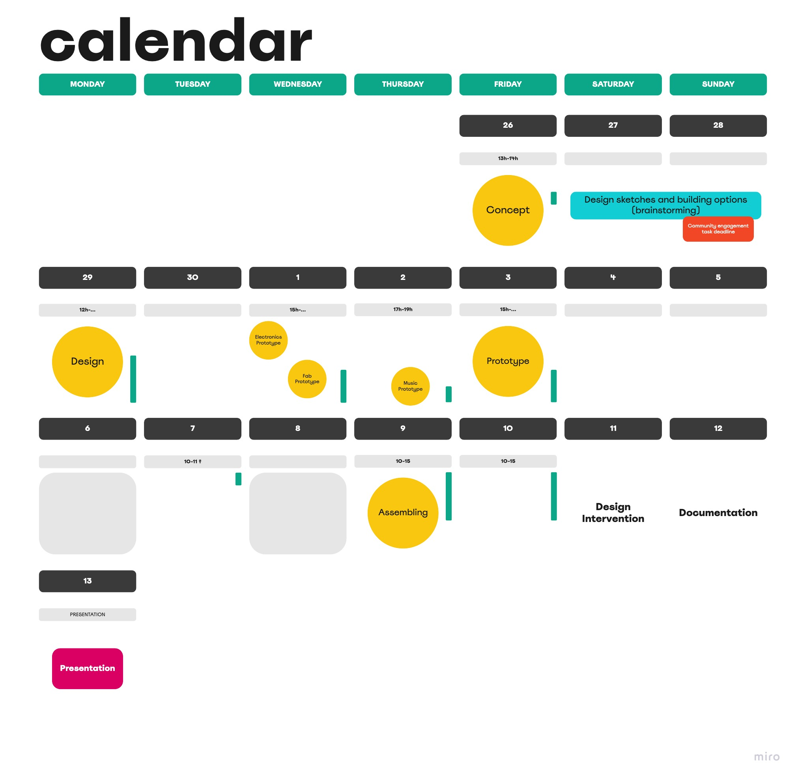
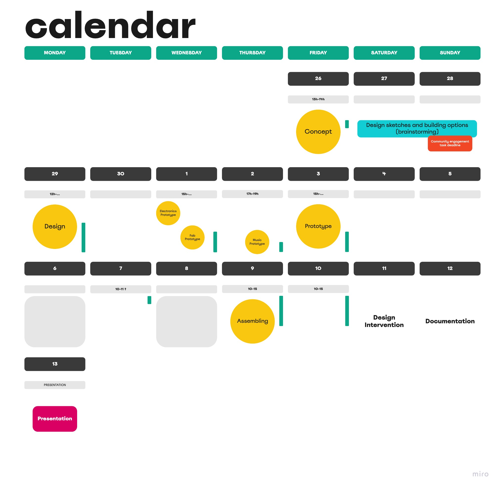

Music, Plants and some Electronics
For the final Design Dialogues event at the end of term 1, Joaquin, Didac and myself teamed up for the accompanying design intervention. We are interested in the intersection between music, collaborative jamming, nature and how these things can be combined. Below, our conceptual ideas and project planning can be found, as well as some first sketches for the final project artifact.
 
Our Miro board showing the design process (left) and project timelibne (right).

Mapping our community engagement points on Miro.